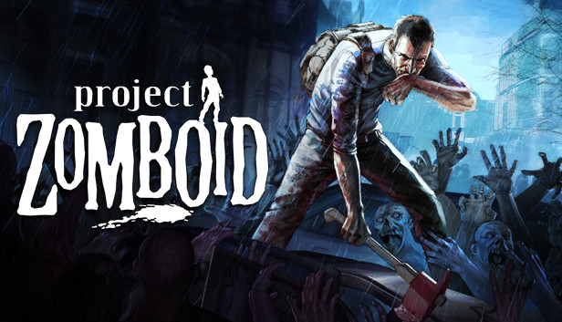

Guia de Sobrevivência
Introdução ao Guia
Guia
Neste guia, você aprenderá tudo o que precisa para se tornar um sobrevivente eficaz em Project Zomboid. Os objetivos incluem: - Fundamentos do Jogo: Desde a criação do seu personagem até a coleta de recursos essenciais, você terá um entendimento completo das mecânicas básicas que governam o jogo. Aprenderá como escolher traços que beneficiam seu estilo de jogo e como maximizar suas chances de sobrevivência logo no início. - Estratégias de Exploração: O mundo de Project Zomboid é vasto e cheio de surpresas. Você aprenderá a explorar de forma segura, identificando áreas com potencial de recursos, enquanto evita confrontos desnecessários com zumbis. - Combate e Defesa: O combate é inevitável. Este guia oferecerá técnicas para enfrentar zumbis e outros perigos, desde o uso de armas improvisadas até estratégias de evasão. Você também aprenderá a fortificar sua base e a usar o ambiente a seu favor. - Gerenciamento de Necessidades: A sobrevivência vai além do combate. Você precisa gerenciar sua saúde, fome e sede. Aprenderá a importância de uma dieta equilibrada, a coleta de água potável e o cuidado com ferimentos e doenças. - Dicas Avançadas: Para os jogadores que já têm alguma experiência, o guia também inclui estratégias avançadas para se estabelecer em longas sessões de jogo, aproveitando ao máximo as mecânicas do jogo e desenvolvendo suas habilidades ao longo do tempo. - Recursos e Comunidade: Por último, o guia incluirá informações sobre recursos adicionais, como comunidades online e fóruns onde você pode compartilhar experiências, buscar ajuda e encontrar novos amigos para jogar. Ao longo do guia, dicas práticas e informações úteis o ajudarão a enfrentar os desafios do apocalipse zumbi com confiança e eficácia. Prepare-se para mergulhar em uma jornada intensa de sobrevivência, onde sua astúcia e planejamento serão testados a cada passo.
Abaixo das opções de navegação do site, você encontrará uma caixa intitulada 'Atalhos'. Clique no nome do capítulo desejado para acessá-lo e avançar para a próxima página. As páginas seguem uma ordem crescente (por exemplo, da 1.0 para a 2.0).
Visão Geral do Jogo
Project Zomboid é um jogo de simulação de sobrevivência que coloca os jogadores em um mundo aberto pós-apocalíptico, dominado por zumbis. Desenvolvido pela The Indie Stone, o jogo se destaca por sua profundidade e realismo, oferecendo uma experiência rica e imersiva. Ao contrário de muitos jogos de ação, Project Zomboid exige planejamento cuidadoso e uma abordagem estratégica para sobreviver em um ambiente hostil, onde cada decisão pode ser a diferença entre a vida e a morte. No jogo, você assume o controle de um sobrevivente que deve lutar para se manter vivo em um mundo repleto de perigos. A jogabilidade é marcada pela gestão de recursos, que inclui comida, água, medicamentos e suprimentos. Além disso, você terá que lidar com fatores como cansaço, doenças, e o estado mental do seu personagem, que podem influenciar suas habilidades e decisões. O jogo também apresenta um ciclo dia-noite dinâmico e um clima que afeta a jogabilidade, tornando cada sessão única. A interação com o ambiente é uma das características mais marcantes de Project Zomboid. Você pode explorar diversas localidades, desde residências e lojas até fábricas e campos. Cada lugar pode conter recursos valiosos ou zumbis esperando por você. O jogo permite que você colete itens, crie ferramentas e armas, e construa abrigos para se proteger dos perigos externos. Com uma mecânica de construção detalhada, você pode personalizar sua base para se adequar ao seu estilo de jogo, seja criando armadilhas, fortificações ou sistemas de armazenamento.